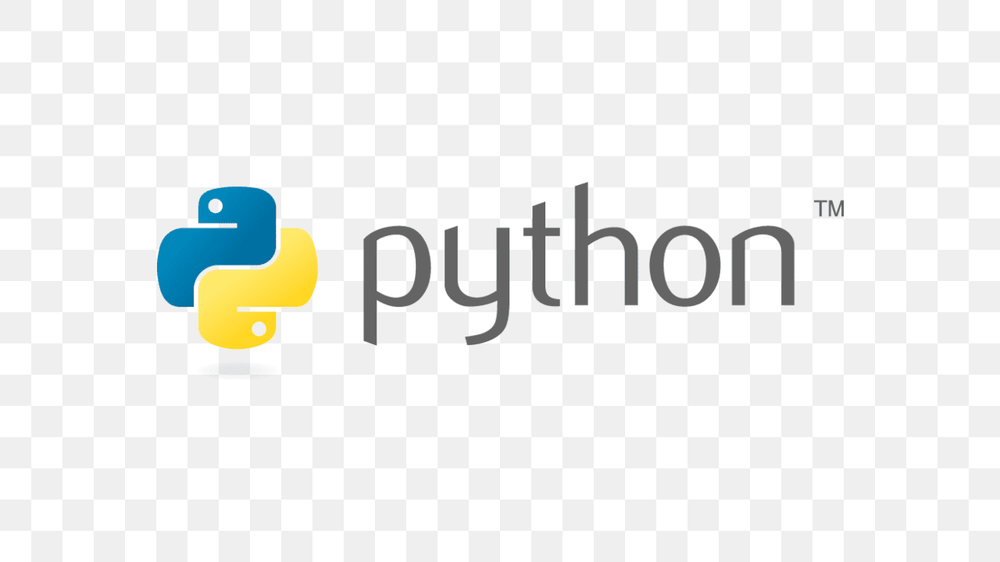

C é uma linguagem de programação compilada de propósito geral, estruturada, imperativa, procedural, padronizada pela Organização Internacional para Padronização, criada em 1972 por Dennis Ritchie na empresa AT&T Bell Labs para desenvolvimento do sistema operacional Unix.

Java é uma linguagem de programação baseado na orientação por objeto desenvolvida na década de 90, baseada na linguagem C, por uma equipe de programadores chefiada por James Gosling, na empresa Sun Microsystems, que em 2008 foi adquirido pela empresa Oracle Corporation.
Python é uma linguagem de programação de alto nível, interpretada de script, imperativa, orientada a objetos, funcional, de tipagem dinâmica e forte. Foi lançada por Guido van Rossum em 1991.